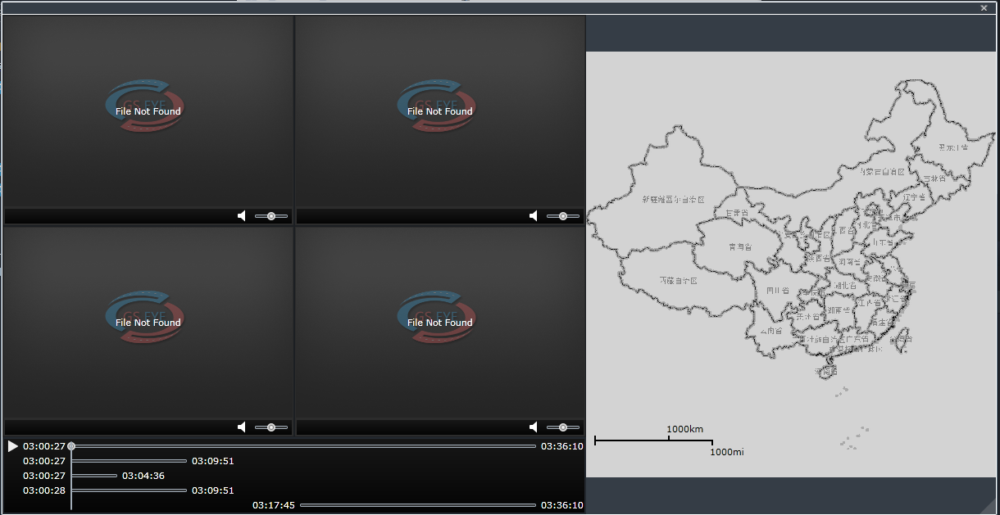

查看历史视频
查看或者下载车辆的历史视频信息。
| 1. | 在日常监控主界面的组织机构树中选择车辆，单击〖 |
| 2. | 选择日期，设置播放的时间段。 |
| 3. | 单击〖 Fig 31 历史视频选择窗口 列表中用颜色表示不同类型的历史视频文件：
如需查看安全套件上的视频文件，下载安全套件视频到服务器：
在信息列表中，选择安全套件视频文件（桔色），单击〖
|
| 4. | 选勾选存储在服务器上的绿色或红色历史视频文件，单击〖播放〗按钮，打开历史视频播放窗口，如下图所示。

Fig 32 历史视频播放窗口 窗口左边是历史视频播放窗口，右边是轨迹播放窗口。在历史视频播放窗口，单击〖〗按钮，开始所选多路历史视频的播放，右边同步显示车辆的历史轨迹。单击单个窗口中的〖
|